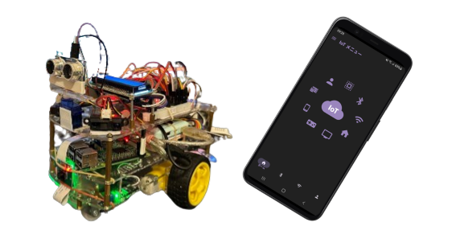

STM32 M0
使用開發板STM32F072RB(M0)，主要控制自走小車動作、驅動馬達、感測器、LCD等等。關於M0開發板 >>
Raspberry
透過Raspberry Pi執行Mjpg-streamer與Django分別提供網路Camera畫面與網路接收指令的伺服器端，進行遠端控制。 關於Mjpg-streamer >>
Android Studio
APP使用Android Studio以Kotlin語法進行開發
使用開發板STM32F072RB(M0)，主要控制自走小車動作、驅動馬達、感測器、LCD等等。關於M0開發板 >>
透過Raspberry Pi執行Mjpg-streamer與Django分別提供網路Camera畫面與網路接收指令的伺服器端，進行遠端控制。 關於Mjpg-streamer >>
APP使用Android Studio以Kotlin語法進行開發